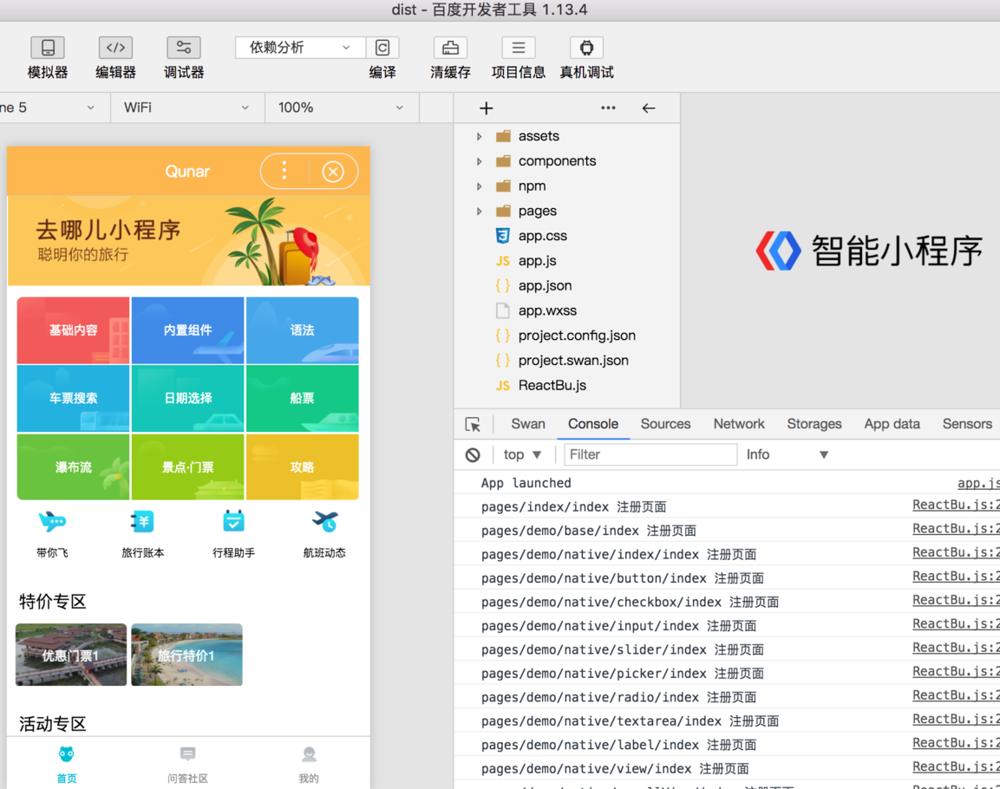
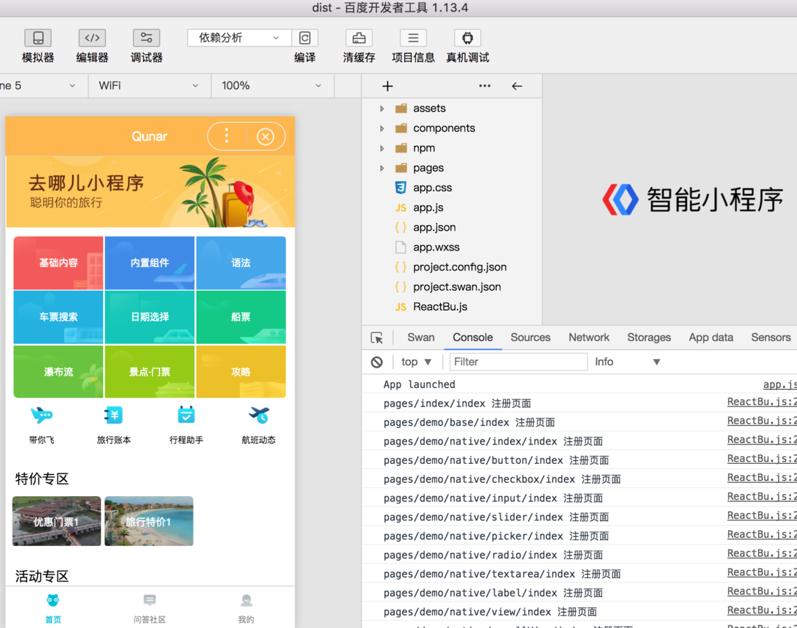

快速开始
前置要求
- 下载并安装微信开发者工具
- 本地
Node.js版本8.6.0以上 - 开发过程中，对文件夹及文件的命名都有一定要求，见发布打包一节

安装
npm
npm install nanachi-cli -g
yarn
yarn global add nanachi-cli
- nanachi init
<project-name>创建工程 cd <project-name> && npm i安装依赖nanachi watch:[wx|bu|ali|quick|h5]监听构建小程序- 用对应的小程序开发工具打开当中的dist目录，自己在source目录中进行开发
nanachi watch:wx默认是从npm拉对应的ReactWx, ReactAli...的稳定版，一星期发布一次。如果出BUG，急紧修复，着急要最新版本，可以使用nanachi watch:wx --beta命令。
注意：快应用下构建结束后，需要执行以下三步骤
npm install # 需要开另一个窗口, 安装快应用的hap编译器， 只需安装一次
npm run build # 与上面同一窗口, 生成dist目录
npm run server # 需要第三个窗口, 运行node环境，这时会出一个二维码与一个链接，保证PC的WIFI与手机的WIFI是同一个，然后用手机上的快应用调试器 扫描，就能看到效果。也可以将链接贴到chrome中，这时二维码会出现页面上，也是手机扫描，可以同时在手机与网页上看到效果，此这种方式用于调式。
更多便捷的命令
nanachi page aaa # 在pages目录下创建aaa/index.js模板
nanachi component Dog # 在components目录下创建Dog/index.js模板
nanachi build:[wx|ali|bu|quick|tt|h5|360] --beta #同步最新的 React lib
nanachi watch:[wx|ali|bu|quick|tt|h5] --beta-ui #同步最新的补丁组件
nanachi -V #查看当前版本
第二种安装
此方式下适用于去哪儿网内部用户，在参与开发nanachi框架的技术人员
git clone git@github.com:RubyLouvre/anu.git或git clone https://github.com/RubyLouvre/anu.git- 命令行定位到
packages/cli目录下，执行npm link如果之前装过要先npm unlink - 然后定位到外面的目录，不要在cli目录中建工程。 使用
cd ../../ && nanachi init demo创建工程 - 定位到
demo目录下安装依赖npm i或yarn nanachi build全量编译代码，build后面可跟参数， 如nanachi build:alinanachi watch增量编译代码并监听文件变化，watch后面可跟参数- 用微信开发工具打开当中的dist目录，自己在source目录中进行开发
cd anu/packages/cli && npm i && npm link
cd ../../ && nanachi init demo
cd demo && yarn
nanachi watch //或 nanachi watch:wx 或 nanachi watch:bu 或 nanachi watch:ali 或 或 nanachi watch:tt


 



有远程请求的页面，需要打开右上角 “>>” 详情， 不校验合法域名、web-view（业务域名）、TLS 版本以及 HTTPS 证书 打上勾

用nanachi开发的应用的性能

快应用的安装流程
执行以下命令：
npm install -g hap-toolkit //安装快应用的hap编译器， 只需安装一次
nanachi init xxx // 初始化工程
cd xxx && npm i // npm i可以改成yarn， 安装nanachi的依赖
nanachi watch:quick // 编译代码
npm i // 这是安装快应用的编译器hap的依赖，
npm run build // 这是hap 的构建命令
npm run server -- --watch //或hap server --watch 这是hap 的打开远程服务，生成二维码让你用手机扫码查看编译后的app
。
快应用还没有像微信， 支付宝， 百度那样提供好用的开发者工具，想查看结果需要手机装 快应用调试器。快应用只能用于安卓。
快应用的目标代码分别在src（ux文件）与dist（二进制）
在编译二进制过程，可能有许多警告，因为快应用的标签不支持 data-*属性及许多HTML样式，但这不会影响结果。


360编译
nanachi build:360 # 360编译暂不支持watch模式
cd src
npm install && npm run serve
打开360浏览器的小程序开发模式，新建项目，项目目录选择src目录，然后点击调试即可。